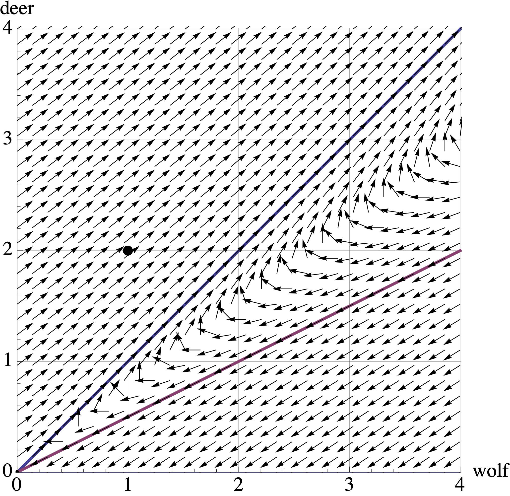
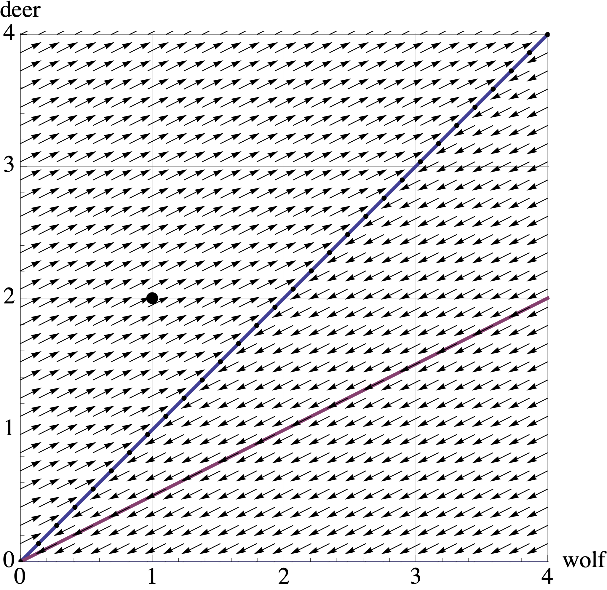

Vector 26 Quiz 3 Review
26.1 Overview
Our third quiz covers sections 5.1-5.3 and 5.5-5.6 in Lay’s book. This corresponds to Problem Sets 6 and 7.
The best way to study is to do practice problems. The Quiz will have calculation problems (like Edfinity) and more conceptual problems (like the problem sets). Here are some ways to practice:
- Make sure that you have mastered the Vocabulary, Skills and Concepts listed below.
- Look over the Edfinity homework assingments
- Do practice problems from the Edfinity Practice assignments. These allow you to “Practice Similar” by generating new variations of the same problem.
- Try to resolve the Problem Sets and compare your answers to the solutions.
- Do the practice problems below. Compare your answers to the solutions.
26.1.1 Vocabulary, Concepts and Skills
See the Week 5-6 Learning Goals for the list of vocabulary, concepts and skills.
26.2 Practice Problems
Consider the \(3 \times 3\) matrix \[ A = \left[ \begin{array}{rrr} 2 & -1 & 0 \\ 0 & 1 & 0 \\ -2 & 5 & -2 \\ \end{array} \right] \] with characteristic equation \[ p(\lambda) = -(\lambda -1)(\lambda -2)(\lambda +2). \] Find the eigenvalues and corresponding eigenvectors for \(A\).
Let \(A\) be a \(2 \times 2\) matrix. We view \(A\) as a linear transformation from \(\mathbb{R}^2\) to \(\mathbb{R}^2\). Describe the eigenvalues for each of the following types of matrices.
- \(A\) maps \(\mathbb{R}^2\) onto a line through the origin in \(\mathbb{R}^2\).
- \(A\) is a reflection of \(\mathbb{R}^2\) about a line through the origin
- \(A\) is a reflection of \(\mathbb{R}^2\) through the origin
- \(A\) is a horizontal shear
Below are the eigenvalues of four different \(5 \times 5\) matrices. For each, decide if the matrix is invertible and if it is diagonalizable. Answer Yes, No or “Not enough information to determine this.”
- \(A\) has eigenvalues \(\lambda = -4, -3,0,1, 2\)
- \(B\) has eigenvalues \(\lambda = -3, -1, 1, \sqrt{2}, 8.\)
- \(C\) has eigenvalues \(\lambda = 1, 2, 2, 7, 8.\)
- \(D\) has eigenvalues \(\lambda = -1, 0, 3,3, 10\)
Here the diagonalization of a matrix: \[ \mathsf{A}=\left[ \begin{array}{ccc} 5 & 2 & -1 \\ 2 & 1 & 0 \\ -1 & 0 & 1 \\ \end{array} \right] = \left[ \begin{array}{ccc} -5 & 0 & 1 \\ -2 & 1 & -2 \\ 1 & 2 & 1 \\ \end{array} \right] \left[ \begin{array}{ccc} 6 & 0 & 0 \\ 0 & 1 & 0 \\ 0 & 0 & 0 \\ \end{array} \right]\left[ \begin{array}{ccc} -\frac{1}{6} & -\frac{1}{15} & \frac{1}{30} \\ 0 & \frac{1}{5} & \frac{2}{5} \\ \frac{1}{6} & -\frac{1}{3} & \frac{1}{6} \\ \end{array} \right]. \]
- Is the matrix \(\mathsf{A}\) invertible?
- Find a nonzero vector in \(\mathrm{Nul}(\mathsf{A})\) if one exists.
- Find a steady-state vector \(\mathsf{v}\) such that \(\mathsf{A} \mathsf{v} = \mathsf{v}\) if one exists.
- Give the coordinates of \(\mathsf{v} = [1,2,3]^T\) in the eigenbasis without row reductions.
- Find a formula for \(\mathsf{A}^{2020} \mathsf{v}\) if \(\mathsf{v} = [1,2,3]^T\) in terms of the eigenbasis.
The eigensystem of matrix \(A\) is given below. It has complex eigenvalues. What angle does it rotate by? What factor does it scale by? \[ \begin{bmatrix} 3 & -5 \\ 1 & -1 \end{bmatrix}, \qquad \lambda = 1 \pm i, \qquad v = \begin{bmatrix} 2 \\ 1 \end{bmatrix} \pm \begin{bmatrix} 1 \\ 0 \end{bmatrix} i. \]
Using the matrix \(B = = \begin{bmatrix} .97 & -.71 \\ .71 & .97 \end{bmatrix}\) and the starting vector \(\mathsf{v} = \begin{bmatrix} 1 \\ 0 \end{bmatrix}\), I plotted the points \[\mathsf{v}, B \mathsf{v}, B^2\mathsf{v}, B^3 \mathsf{v}, \ldots.\] I saw that these points are, roughly, going around in a circle.
- How many multiplications by \(B\) does it take to get back around to the positive \(x\)-axis?
- When I come full circle, am I closer to the origin, farther from the origin, or the same distance to the origin?
- How many multiplications by \(B\) does it take to get back around to the positive \(x\)-axis?
For each matrix below, decide if it is diagonalizable. You do not need to diagonalize the matrix (though you can!), but you must give a reason for why the matrix is or is not diagonalizable.
\(A = \begin{bmatrix} 0 & -4 & 2 \\ 2 & -4 & -1 \\ -6 & 4 & 7 \end{bmatrix}\) has eigenvalues \(4, -1, 0\).
\(B = \begin{bmatrix} 3 & -1 & 2 \\ -1 & 3 & 2 \\ 2&2 & 0 \end{bmatrix}\) has eigenvalues \(4,4,-2\).
Consider the matrix with eigenvalues and eigenvectors \[ A = \begin{bmatrix} 0.7 & 0.2 \\ 0.3 & 0.8 \end{bmatrix} \qquad \begin{array}{cc} \lambda_1 = 1 & \lambda_2 = .5 \\ \mathsf{v}_1 = \begin{bmatrix} 2 \\ 3 \end{bmatrix} & \mathsf{v}_2 = \begin{bmatrix} 1 \\ -1 \end{bmatrix} \end{array} \]
- Diagonalize \(A\).
- What can you say about \(\displaystyle{\lim_{n \to \infty}} A^n\)?
- Give a formula for \(A^n \mathsf{x}_0\) if \(\mathsf{x}_0 = \begin{bmatrix} 25 \\ 0 \end{bmatrix}\) in terms of the eigenbasis.
- What is \(\displaystyle{\lim_{n \to \infty}} A^n \begin{bmatrix} 25 \\ 0 \end{bmatrix}\)?
The matrix \(A\) below has the given eigenvalues and eigenvectors. \[ A = \left[ \begin{array}{cc} \frac{1}{2} & \frac{1}{5} \\ -\frac{2}{5} & \frac{9}{10} \\ \end{array} \right] \qquad \begin{array}{c} \lambda = .7 \pm .2 i \\ \mathsf{v} = \begin{bmatrix} \frac{1}{2} \\ 1 \end{bmatrix} \pm \begin{bmatrix} -\frac{1}{2} \\ 0 \end{bmatrix} i \end{array}\hskip5in \]
- Factor \(A=PCP^{-1}\) where \(C\) is a rotation-scaling matrix.
- What is the angle of rotation?
- What is the factor of dilation?
In a 1962 study of rainfall in Tel Aviv, it was determined that if today is a wet day, then the probability that tomorrow will be wet is 0.662 and the probability that tomorrow it will be dry is 0.338. If today is a dry day, then the probability that tomorrow is wet is 0.250 and the probability that tomorrow is dry will be 0.75. From this I computed the following: \[ A = \begin{bmatrix} 0.662 & 0.25 \\ 0.338 & 0.75\end{bmatrix}; \qquad \begin{array}{cc} \lambda_1 = 1.0 & \lambda_2 = 0.412 \\ \mathsf{v}_1 = \begin{bmatrix}-0.595 \\ -0.804 \end{bmatrix} & \quad \mathsf{v}_2 = \begin{bmatrix}-0.707\\ 0.707 \end{bmatrix} \end{array} \]
- If Monday is a dry day, what is the probability that Wednesday will be wet?
- In the long-run, what is the distribution of wet and dry days?
Conservation biologists in the Minnesota boundary waters have modeled the predator-prey dynamics of Grey Wolves \(X\) and White Tailed Deer \(Y\), which have a predator-prey relationship: \[ \left[ \begin{array}{r} X_{t+1} \\ Y_{t+1} \end{array} \right] = \left[ \begin{array}{rr} 0.7 & 0.4 \\ -0.2 & 1.2 \end{array} \right] \left[ \begin{array}{r} X_{t} \\ Y_{t} \end{array} \right] \qquad \mbox{where} \qquad X_0=1 \mbox{ and } Y_0=2. \] Here, \(t\) is measured in years and \(X\) and \(Y\) are measured in \(100,000\) animals.
The plot below shows the vector field for this dynamical system. Draw or describe the trajectory of the populations starting at \([X_0, Y_0] = [1,2]\). In one or two sentences, describe what happens to these populations over time.

The population biologists consider two options to fix this system. The first option is a deer breeding program to increase their productivity. Their adjusted model becomes: \[ \left[ \begin{array}{r} X_{t+1} \\ Y_{t+1} \end{array} \right] = \left[ \begin{array}{rr} 0.7 & 0.4 \\ -0.2 & 1.3 \end{array} \right] \left[ \begin{array}{r} X_{t} \\ Y_{t} \end{array} \right] \] whose transition matrix has eigenvectors and eigenvalues \[ \lambda_1 = 1.1 \mbox{ with eigenvector } \begin{bmatrix} 1 \\ 1 \end{bmatrix} \quad \mbox{and} \quad \lambda_2 = 0.9 \mbox{ with eigenvector } \begin{bmatrix} 1 \\ 0.5 \end{bmatrix}. \]

Draw or describe the trajectory of the populations starting at \((X_0, Y_0) = (1,2)\) in the above vector plot. Describe what happens to these populations over time, and relate these observations to the eigenvectors and eigenvalues of the transition matrix.
The second option they consider is a limited wolf hunting season. This reduces the productivity of the wolves, giving the new model: \[ \left[ \begin{array}{r} X_{t+1} \\ Y_{t+1} \end{array} \right] = \left[ \begin{array}{rr} 0.6 & 0.4 \\ -0.2 & 1.2 \end{array} \right] \left[ \begin{array}{r} X_{t} \\ Y_{t} \end{array} \right] \] whose transition matrix has eigenvectors and eigenvalues \[ \lambda_1 = 1 \mbox{ with eigenvector } \begin{bmatrix} 1 \\ 1 \end{bmatrix} \quad \mbox{and} \quad \lambda_2 = 0.8 \mbox{ with eigenvector } \begin{bmatrix} 1 \\ 0.5 \end{bmatrix} \]

Once again, draw or desctibe the trajectory of the populations starting at \((X_0, Y_0) = (1,2)\) in the above vector plot. Describe what happens to these populations over time, and relate these observations to the eigenvectors and eigenvalues of the transition matrix.
The conservation biologists want to create a stable ecosystem, where the populations of deer and wolves remain constant over time. Which option (deer breeding or limited wolf hunting) would you recommend?
A population of female bison is split into three groups: juveniles who are less than one year old; yearlings between one and two years old; and adults who are older than two years. Each year,
- 80% of the juveniles survive to become yearlings.
- 90% of the yearlings survive to become adults.
- 80% of the adults survive.
- 40% of the adults give birth to a juvenile Let \(\mathsf{x}_t = \begin{bmatrix} J_t \\ Y_t \\ A_t \end{bmatrix}\) be the state of the system in year \(t\).
- Find the Leslie matrix \(L\) such that \(\mathsf{x}_{t+1} = B \mathsf{x}_t.\).
- Find the eigenvalues of \(L\).
- The matrix \(L\) has two complex eigenvalues and one real eigenvalue. How do the complex eigenvectors manifest in the trajectory of a population?
- What is the long-term behavior of the herd? Will the size of the herd grow, stablilize or shrink? What will be the proportions of juveniles, yearlings and adults in the herd?
26.3 Solutions to Practice Problems
- There are three eigenvalues: 1, 2, and \(-2\). We find an eigenvector for each of them.
Eigenvalue \(\lambda = 1\) \[ A - I = \left[ \begin{array}{rrr} 1 & -1 & 0 \\ 0 & 0 & 0 \\ -2 & 5 & -3 \\ \end{array} \right] \sim \left[ \begin{array}{rrr} 1 & -1 & 0 \\ 0 & 3 & -3 \\ 0 & 0 & 0 \\ \end{array} \right] \sim \left[ \begin{array}{rrr} 1 & -1 & 0 \\ 0 & 1 & -1 \\ 0 & 0 & 0 \\ \end{array} \right] \sim \left[ \begin{array}{rrr} 1 & 0 & -1 \\ 0 & 1 & -1 \\ 0 & 0 & 0 \\ \end{array} \right] \] So one eigenvector is \([1,1,1]^{\top}\)
Eigenvalue \(\lambda = 2\) \[ A - 2I = \left[ \begin{array}{rrr} 0 & -1 & 0 \\ 0 & -1 & 0 \\ -2 & 5 & -4 \\ \end{array} \right] \sim \left[ \begin{array}{rrr} -2 & 5 & -4 \\ 0 & -1 & 0 \\ 0 & 0 & 0 \\ \end{array} \right] \sim \left[ \begin{array}{rrr} -2 & 0 & -4 \\ 0 & 1 & 0 \\ 0 & 0 & 0 \\ \end{array} \right] \sim \left[ \begin{array}{rrr} 1 & 0 & 2 \\ 0 & 1 & 0 \\ 0 & 0 & 0 \\ \end{array} \right] \] So one eigenvector is \([-2,0,1]^{\top}\)
Eigenvalue \(\lambda = -2\) \[ A - 2I = \left[ \begin{array}{rrr} 4 & -1 & 0 \\ 0 & 3 & 0 \\ -2 & 5 & 0 \\ \end{array} \right] \sim \left[ \begin{array}{rrr} 4 & 0 & 0 \\ 0 & 1 & 0 \\ -2 & 0 & 0 \\ \end{array} \right] \sim \left[ \begin{array}{rrr} 1 & 0 & 0 \\ 0 & 1 & 0 \\ 0 & 0 & 0 \\ \end{array} \right] \] So one eigenvector is \([0,0,1]^{\top}\)
\(\lambda=0\) is one eigenvalue. We know that the other eigenvalue is nonzero, since we are mapping onto a line. However, we can’t say anything more without additional information.
The eigenvalues are \(\lambda_1 = 1\) and \(\lambda_2=-1\). Let \(L\) be the line of reflection.
- If \(\mathsf{v} = [a,b]^{\top}\) is on \(L\), then \(T(\mathsf{v}) = \mathsf{v}\).
- The vector \(\mathsf{w} = [-b,a]^{\top}\) is perpendicular to \(L\), so \(T(\mathsf{w}) = -\mathsf{w}\).
The eigenvalues are \(\lambda_1 = \lambda_2=-1\) because \[ T\left( \begin{bmatrix} x_1 \\ x_2 \end{bmatrix} \right) = \begin{bmatrix} -x_1 \\ -x_2 \end{bmatrix} = \begin{bmatrix} -1 & 0 \\ 0 & -1 \end{bmatrix} \begin{bmatrix} x_1 \\ x_2 \end{bmatrix} \]
There is one eigenvalue \(\lambda=1\) with algebraic multiplicity 2. However, it only has geometric multiplicity 1. We know that a shear matrix is not diagonalizable.
- \(A\) is not invertible because \(0\) is an eigenvalue. \(A\) is diagonalizable because it have 5 distinct eigenvalues.
- \(B\) is invertible because \(0\) is not an eigenvalue. \(B\) is diagonalizable because it have 5 distinct eigenvalues.
- \(C\) is invertible because \(0\) is not an eigenvalue. We cannot tell whether \(C\) is diagonalizable without more information. The eigenvalue \(\lambda=2\) has algebraic multiplicity 2. We need to know whether the geometric multiplicity is 1 or 2.
- \(D\) is not invertible because \(0\) is an eigenvalue. We cannot tell whether \(D\) is diagonalizable without more information. The eigenvalue \(\lambda=3\) has algebraic multiplicity 2. We need to know whether the geometric multiplicity is 1 or 2.
- No, \(A\) is not invertible because \(0\) is an eigenvalue.
- \(\mathsf{v} = [1, -2, 1]^{\top}\) is an eigenvector for \(\lambda=0\). Therefore \(\mathsf{v} \in \mbox{Nul}(A)\).
- The vector \(\mathsf{v} = [0,1,2]^{\top}\) is an eigenvector for \(\lambda=1\). So this is a steady-state vector. (However, the dynamical system will not converge to this steady state because \(\lambda=6\) is the dominant eigenvalue.)
- When \(A=P D P^{-1}\), we can find the coordinates of a vector with respect to the eigenbasis via multiplication by \(P^{-1}\).
## [,1]
## [1,] -0.2
## [2,] 1.6
## [3,] 0.0So \([ \mathsf{v}]_{\mathcal{B}} = [-1/5, 8/5, 0]^{\top}\).
- \(-\frac{1}{5} \cdot 6^{2020} \cdot \begin{bmatrix} -5 \\ -2 \\ 1 \end{bmatrix} + \frac{8}{5} \cdot \begin{bmatrix} 0 \\ 1 \\ 2 \end{bmatrix}\)
This system scales by \(\sqrt{1+1} = \sqrt{2}\) and it rotates by \(\tan^{-1} (1/1) = \pi/4\).
We have \[ \begin{bmatrix} a & -b \\ b & a \end{bmatrix} = \begin{bmatrix} .97 & -.71\\ .71 & .97 \end{bmatrix} \]
Let’s turn to RStudio
## [1] 1.202082## [1] 0.6318544## [1] 9.94404- It takes 10 iterations to rotate past the \(x\)-axis.
- We are further from the origin because \(| \lambda| \approx 1.2 > 1\).
- The matrix \(A\) is diagonalizable because it has 3 distinct eigenvalues
- We must see whether \(\lambda=4\) has geometric multiplicty 2 (to match its algebraic multiplicity).
## [,1] [,2] [,3]
## [1,] 1 1 -2
## [2,] 0 0 0
## [3,] 0 0 0We see that \(B - 4I\) has two free columns, so \(\dim ( \mbox{Nul}(B-4I))=2\). This means that \(\lambda=4\) has geometric multiplicity 2. Therefore \(B\) is diagonalizable.
- We set \(P = \begin{bmatrix} 2 & 1 \\ 3 & -1 \end{bmatrix}\). So \[ P^{-1} = - \frac{1}{5} \begin{bmatrix} -1 & -1 \\ -3 & 2 \end{bmatrix} = \begin{bmatrix} 0.2 & 0.2 \\ 0.6 & -0.4 \end{bmatrix} \] Or we can find this inverse using RStudio.
## [,1] [,2]
## [1,] 0.2 0.2
## [2,] 0.6 -0.4Therefore \[ A = \begin{bmatrix} 0.7 & 0.2 \\ 0.3 & 0.8 \end{bmatrix} = \begin{bmatrix} 2 & 1 \\ 3 & -1 \end{bmatrix} \begin{bmatrix} 1 & 0 \\ 0 & 0.5 \end{bmatrix} \begin{bmatrix} 0.2 & 0.2 \\ 0.6 & -0.4 \end{bmatrix} \]
- \(\lim_{n \rightarrow \infty} A^n = \begin{bmatrix} 0.4 & 0.6 \\ 0.4 & 0.6 \end{bmatrix}\) because \(\lambda=1\) is the dominant eigenvalue. So each column of \(A\) convergence to vector in the eigenspace for the dominant eigenvalue. Basically, we treat each column of \(A\) as a “starting vector” repeated multiplication by \(A\) converges to the dominant eigenspace. Here are the details.
Let \(\mathsf{v}_1 = \begin{bmatrix} 2 \\ 3 \end{bmatrix}\) and \(\mathsf{v}_2 = \begin{bmatrix} 1 \\ -1 \end{bmatrix}\). For any constants \(c_1, c_2\), we have \[ \lim_{n \rightarrow \infty} A^n (c_1 \mathsf{v}_1 + c_2 \mathsf{v}_2) = \lim_{n \rightarrow \infty} \left( c_1 A^n \mathsf{v}_1 + c_2 A^n \mathsf{v}_2 \right) = \lim_{n \rightarrow \infty} \left( c_1 \mathsf{v}_1 + c_2 (0.5)^n \mathsf{v}_2 \right) = c_1 \mathsf{v}_1. \] So we need to find \(c_1,c_2\) for each column of \(A\). Let’s use R Studio.
## [1] 0.2 0.3## [1] 0.2 -0.2In each case, \(c_1 = 0.2\). Therefore \[ \lim_{n \rightarrow \infty} A^n = \begin{bmatrix} 0.4 & 0.4 \\ 0.6 & 0.6 \end{bmatrix}. \]
- We need to find the coefficients for \(x_0 = [25, 0]^{\top}\).
## [1] 5 15So the formula is\[ 5 \begin{bmatrix} 2 \\ 3 \end{bmatrix} + 15 \left( \frac{1}{2} \right)^n \begin{bmatrix} 1 \\ -1 \end{bmatrix} \]
- This converges to \(5 \begin{bmatrix} 2 \\ 3 \end{bmatrix}\).
- We have \[ A = \left[ \begin{array}{cc} \frac{1}{2} & \frac{1}{5} \\ -\frac{2}{5} & \frac{9}{10} \\ \end{array} \right] = \begin{bmatrix} -1/2 & 1/2 \\ 0 & 1 \end{bmatrix} \begin{bmatrix} 0.7 & -0.2 \\ 0.2 & 0.7 \end{bmatrix} \begin{bmatrix} -2 & 1 \\ 0 & 1 \end{bmatrix} \] Here are some R calculations to check the answer for (a) and to find the values for (b) and (c).
## [,1] [,2]
## [1,] 0.5 0.2
## [2,] -0.4 0.9## eigen() decomposition
## $values
## [1] 0.7+0.2i 0.7-0.2i
##
## $vectors
## [,1] [,2]
## [1,] 0.4082483-0.4082483i 0.4082483+0.4082483i
## [2,] 0.8164966+0.0000000i 0.8164966+0.0000000i## [,1] [,2]
## [1,] -2 1
## [2,] 0 1## [,1] [,2]
## [1,] 0.5 0.2
## [2,] -0.4 0.9## [1] 0.2782997## [1] 0.728011- The angle of rotation is \(\tan^{-1} (.2/.7) = 0.278\) radians
- The dilation factor is \(\sqrt{0.49 + 0.04} = \sqrt{0.53} = 0.728\).
- Let’s use RStudio.
## [,1]
## [1,] 0.353
## [2,] 0.647## [1] 0.4253038 0.5746962- If Monday is dry, then the probability of a wet Wednesday is \(0.353\). The easiest way to calculate this \(A^2 \begin{bmatrix} 1 \\ 0 \end{bmatrix}.\)
- In the long run, \(42.5\%\) of days are wet and \(57.5\%\) of days are dry.
- Initially, both populations increase from \([1, 2]\) to \([2.25,2.5]\), with wolves increasing more quickly. The wolves continue to increase, while the deer start to decrease. After reachaing \([3,2]\), both populations decrease. The deer die out first at the point \([.8,0]\).
- Deer breeding: Both populations thrive and grow every year, converging slowly to a \(1:1\) ratio. The long-term growth rate is \(1.1\), or \(10\%\) growth.
- Wolf hunting: Once again, both populations increase. But this time we converge on a stable population of about \([2.5, 2.5]\).
- Since they want a stable ecosystem, the wolf hunting is a better option. Ww reach a stable equilibrium population of \([2.5, 2.5]\)
- Here is the Leslie matrix, as well as some eigensystem computations.
## [,1] [,2] [,3]
## [1,] 0.0 0.0 0.4
## [2,] 0.8 0.0 0.0
## [3,] 0.0 0.9 0.8## eigen() decomposition
## $values
## [1] 1.0575217+0.0000000i -0.1287609+0.5057227i -0.1287609-0.5057227i
##
## $vectors
## [,1] [,2] [,3]
## [1,] 0.3417536+0i -0.1097728+0.4311448i -0.1097728-0.4311448i
## [2,] 0.2585317+0i 0.6820256+0.0000000i 0.6820256+0.0000000i
## [3,] 0.9035297+0i -0.5097632-0.2775729i -0.5097632+0.2775729i## [1] 0.2272578+0i 0.1719172+0i 0.6008250+0i- The eigenvalues are \(1.058, -0.129 \pm 0.506 i\).
- If we start outside of the span of the dominant eigenvalue, then the trajectory will wiggle with a mild oscillation with an overall growth trend of \(1.058\), or \(5.8\%\).
- The size of the herd grows. THe proportions are \([0.227, 0.172, 0.601]\).